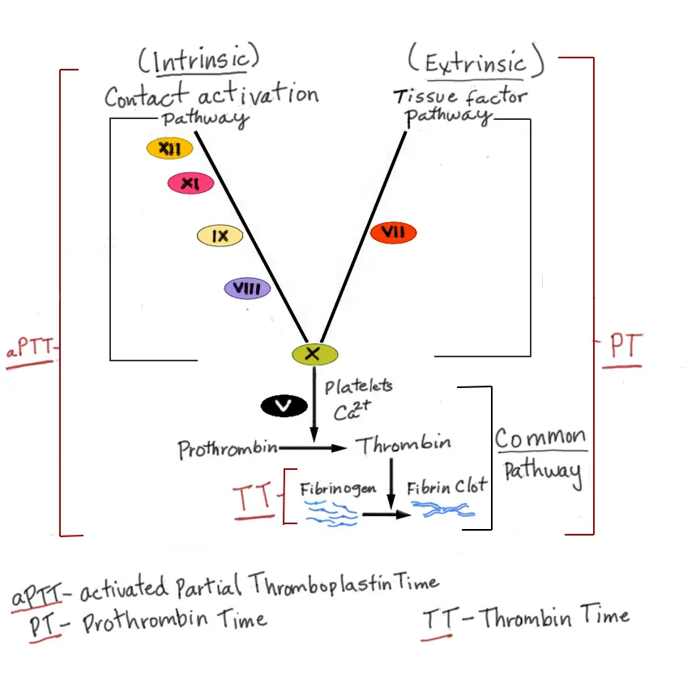

DX.2 — Épistaxis favorisée par un traitement antithrombotique
🚩 E1 du LOT : un antithrombotique transforme une petite lésion de la tache vasculaire en saignement long, récidivant et parfois transfuséS1S10. Le danger est double, car l'hémorragie menace d'abord, puis une interruption mal conduite expose à la thromboseS1S2. Le premier geste reste la compression, puis le médecin identifie la molécule, l'heure de la dernière prise et, sous antivitamine K, l'INR (rapport normalisé international)S1S5.
1. Définition
La Société française d'oto-rhino-laryngologie (SFORL) a publié en 2016 ses recommandations sur l'épistaxis de l'adulteS1. Elle attribue aux anticoagulants et aux antiagrégants plaquettaires un rôle pro-hémorragique, avec un risque propre de majoration du saignement lors du tamponnementS1. L'épistaxis favorisée par un traitement antithrombotique désigne donc un saignement des fosses nasales qu'un médicament de l'hémostase prolonge, aggrave ou fait récidiverS1S10. Le guide pratique de l'European Heart Rhythm Association (EHRA) de 2021 distingue trois niveaux de saignement : gênant ou mineur, majeur sans menace vitale, et menaçant le pronostic vitalS2.
Trois niveaux de saignement sous anticoagulant
L'EHRA classe le saignement selon le jugement clinique, qui intègre sa localisation, son abondance, l'âge et les comorbiditésS2. Les définitions officielles, comme celle de l'International Society on Thrombosis and Haemostasis (ISTH), peuvent appuyer ce jugementS2.
| Niveau | Ce qui le caractérise | Conséquence pour l'anticoagulant |
|---|---|---|
| Gênant ou mineur | Le saignement cède aux gestes locaux et ne retentit pas sur l'hémodynamique. | La reprise suit souvent un simple report ou l'omission d'une seule prise, décidés par le médecin. |
| Majeur sans menace vitale | Le saignement persiste ou retentit, sans atteindre un organe critique. | Le médecin réévalue le bénéfice et le risque avant toute reprise. |
| Menaçant le pronostic vital | L'hémorragie déstabilise le patient ou siège dans un organe critique. | La neutralisation s'ajoute aux mesures habituelles, sans attendre la biologie. |
Une épistaxis isolée appartient le plus souvent au premier niveau ; elle change de niveau dès qu'elle retentit ou résiste aux gestes locauxS2S1.
2. Épidémiologie (Suisse, puis Europe)
À l'Hôpital universitaire de Zurich, 116 des 591 épistaxis enregistrées survenaient sous anticoagulant oral, soit environ une sur cinqS5. Parmi ces 116 patients, 19 avaient un INR au-dessus de la zone thérapeutique, soit 16 %S5. Aux urgences de l'Hôpital de l'Île à Berne, 440 épistaxis non traumatiques sous phenprocoumone ou rivaroxaban ont été admises entre 2012 et 2016S4. Les séries suisses et européennes confirment ce poids, et l'histoire naturelle distingue nettement les classes de médicaments.
Chiffres suisses et européens
Les chiffres suivants viennent de séries hospitalières ; ils ne mesurent donc pas l'incidence dans la population générale suisseS5S7.
| Chiffre | Population | Année | Source |
|---|---|---|---|
| 116 sur 591 épistaxis sous anticoagulant oral ; INR suprathérapeutique chez 16 % | Hôpital universitaire de Zurich | 2013 | S5 |
| 440 patients ; 28 % sous rivaroxaban et 72 % sous phenprocoumone | Urgences de l'Hôpital de l'Île, Berne, 2012–2016 | 2017 | S4 |
| Antivitamine K : facteur de récidive indépendant, rapport de cotes de 11,6 | Cohorte rétrospective zurichoise citée par la revue allemande | 2018 | S10 |
| 24 à 33 % des hospitalisés pour épistaxis prennent un anticoagulant ou un antiagrégant | Revue allemande | 2018 | S10 |
| 840 hospitalisés ; âge médian de 73 ans ; 63,9 % sous anticoagulation | Thuringe, tous les services d'ORL | 2016 | S7 |
| Incidence hospitalière de 42 pour 100 000 hommes et 28 pour 100 000 femmes ; 222 pour 100 000 hommes de plus de 85 ans | Thuringe | 2016 | S7 |
| Anticoagulant oral : facteur de réadmission, rapport de cotes de 1,731 | Thuringe | 2016 | S7 |
| Épistaxis chez 12,2 % des traumatisés de la face de 65 ans et plus sous antithrombotique | Urgences de l'Hôpital de l'Île, Berne, 2013–2019 | 2024 | S11 |
Le risque augmente avec l'âge, car l'incidence hospitalière culmine chez l'homme de plus de 85 ansS7. Le terrain cumule ensuite fibrillation auriculaire, maladie thromboembolique et coronaropathie, qui justifient le traitementS11.
Histoire naturelle et pronostic
Une méta-analyse européenne de huit séries, soit 1390 patients, compare les anticoagulants directs aux antivitamines KS8. Sous anticoagulant direct, le séjour hospitalier est plus court et le saignement postérieur plus rare (rapport de cotes de 0,39)S8. Les taux de récidive, d'hospitalisation, de transfusion et de chirurgie ne diffèrent pas significativement entre les deux classesS8.
À Berne, 10,4 % des patients sous rivaroxaban sont hospitalisés, contre 18,0 % sous phenprocoumoneS4. La durée moyenne de séjour atteint 0,7 jour sous rivaroxaban et 1,5 jour sous phenprocoumoneS4. Le saignement antérieur domine sous rivaroxaban (60,2 %), tandis que le saignement postérieur double presque sous phenprocoumone (12,3 % contre 5,7 %)S4.
Le pronostic global dépasse le nez : dans une cohorte zurichoise suivie de 2007 à 2014, 61 des 181 patients, soit 34 %, sont décédésS6. Cette mortalité dépasse celle de la population suisse générale ; l'âge et une prédisposition hémorragique endogène en sont des facteurs indépendantsS6. Une consultation d'urgence pour épistaxis justifie donc un bilan de santé avec le médecin de familleS6.
3. Physiopathologie
La compréhension du diagnostic repose sur une base à connaître : l'hémostase en trois temps et la cible de chaque molécule. Le médicament ne crée pas la brèche vasculaire ; il empêche le caillot de la fermer durablementS1S10. L'effet persiste selon la cinétique propre à chaque classe, ce qui fixe le délai de récupération de l'hémostaseS1S18S23. La corrélation entre perturbation, exploration et traitement découle directement de ces cibles.
Base à connaître : l'hémostase en trois temps
L'hémostase primaire forme d'abord un clou plaquettaire sur la brèche ; le clopidogrel bloque ce temps en modifiant irréversiblement le récepteur plaquettaire P2Y12 de l'adénosine diphosphateS23. Le ticagrelor bloque le même récepteur, mais de façon réversible, ce qui accélère le retour de l'agrégationS24.
La coagulation consolide ensuite ce clou par un réseau de fibrine, que la thrombine produit à partir du fibrinogène. Les antivitamines K privent le foie de la vitamine K nécessaire aux facteurs II, VII, IX et XS14. Le rivaroxaban, l'apixaban et l'édoxaban inhibent directement le facteur X activé, tandis que le dabigatran inhibe la thrombineS17S22S21.
La fibrinolyse détruit enfin la fibrine par la plasmine ; l'acide tranexamique empêche la transformation du plasminogène en plasmineS13. Les caillots laissés dans la fosse nasale entretiennent le saignement par fibrinolyse locale, d'où le mouchage avant la compressionS1.
Cascade de la coagulation et tests qui l'explorent. Schéma didactique de la cascade, avec la couverture du TCA (aPTT), du TP (PT) et du temps de thrombine (TT)

Lisez d'abord seul ce cliché (cascade de la coagulation et tests qui l'explorent) : cherchez vous-même le signe.
La copie annotée (cascade de la coagulation et tests qui l'explorent) numérote les repères décrits ci-dessous.
- Le repère 1 montre le facteur X activé, cible du rivaroxaban, de l'apixaban et de l'édoxabanS17S22.
- Le repère 2 montre la thrombine, cible du dabigatran, que le temps de thrombine dilué détecteS16S2.
- Le repère 3 montre le facteur VII, dont la demi-vie plasmatique médiane de 4 heures explique sa chute précoce sous antivitamine KS15.
- Le repère 4 montre le TP, qui couvre la voie du facteur tissulaire et la voie commune et dont dérive l'INRS14.
Ce que l'image décide. Le médecin choisit le test d'après la molécule : INR sous antivitamine K, activité anti-Xa ou dosage spécifique sous anticoagulant direct.

Délai de récupération de l'hémostase
| Classe | Donnée cinétique | Conséquence pratique |
|---|---|---|
| Antiagrégant plaquettaire | La restauration de l'hémostase peut demander jusqu'à 10 jours après l'arrêtS1S10 ; les plaquettes touchées par le clopidogrel restent modifiées pendant leur vie restante, soit 7 à 10 jours environS23. | L'arrêt n'aide pas le premier tamponnement ; il ne se discute qu'en cas de récidiveS1. |
| Phenprocoumone (Marcoumar®) | La demi-vie d'élimination plasmatique atteint 160 heures environS18. | L'arrêt seul corrige lentement l'INR ; la coagulabilité revient en 2 à 5 jours sans vitamine KS1. |
| Vitamine K | La resynthèse des facteurs demande environ 8 heures, selon le foie et l'âgeS1 ; l'effet débute en 1 à 3 heures par voie intraveineuse et en 4 à 6 heures par voie oraleS14. | Elle ne suffit pas seule devant une hémorragie menaçante. |
| Rivaroxaban | La demi-vie terminale vaut 5 à 9 heures chez le sujet jeune et 11 à 13 heures chez le sujet âgéS19. | L'heure de la dernière prise compte davantage que la dose. |
| Apixaban | La demi-vie d'élimination vaut environ 12 heuresS20. | Un report de prise suffit souvent pour un saignement mineurS2. |
| Édoxaban | La demi-vie vaut 10 à 14 heures ; environ 50 % de la dose absorbée s'élimine par le reinS22. | L'insuffisance rénale prolonge l'effet. |
| Dabigatran | La demi-vie terminale atteint 12 à 14 heures ; le rein l'élimine sous forme inchangéeS21. | Une insuffisance rénale aiguë provoque une accumulation ; la diurèse doit être maintenueS21. |
Après arrêt d'un anticoagulant direct, une coagulation efficace revient en 24 à 72 heures selon la molécule, la dose et la fonction rénaleS1.
Corrélation : perturbation, exploration, thérapeutique
| Perturbation | Exploration qui la montre | Traitement qui la corrige (mécanisme) |
|---|---|---|
| Fonction plaquettaire inhibée par un antiagrégant | Aucun test de routine ; l'anamnèse médicamenteuse fait le diagnostic | Transfusion plaquettaire si saignement incontrôlé, car elle apporte des plaquettes non exposéesS1 |
| Déficit en facteurs II, VII, IX et X sous antivitamine K | INR (temps de Quick) | Vitamine K, qui relance la synthèse hépatique, et concentré de complexe prothrombinique, qui apporte les facteursS14S15 |
| Facteur X activé inhibé par un anti-Xa | Activité anti-Xa calibrée ou dosage spécifique | Andexanet alfa, qui fixe les inhibiteurs du facteur X activéS2S17 |
| Thrombine inhibée par le dabigatran | Temps de thrombine dilué ou temps d'écarine | Idarucizumab, anticorps qui lie le dabigatranS16 |
| Fibrinolyse locale qui dissout le caillot | Constat clinique de caillots et de récidive | Mouchage, compression et acide tranexamique, qui bloque l'activation du plasminogèneS1S13 |
4. Démarche diagnostique
Le médecin écarte d'abord quatre menaces : le choc hémorragique, l'hémorragie intracrânienne après une chute, le surdosage et l'accumulation rénaleS1S11S5S21. Il cherche ensuite la lésion nasale que le médicament démasque, car l'antithrombotique aggrave une cause sans la remplacerS1S10. Le tableau des diagnostics discriminants range ces étapes ; le raisonnement pas à pas évite l'erreur classique du débutant.
Diagnostics discriminants
| Diagnostic | Élément qui tranche | Piège | Conduite si positif |
|---|---|---|---|
| Choc hémorragique | Pression artérielle systolique inférieure à 80 mmHg, tachycardie, troubles de la conscience ou marbruresS1 | Le sang dégluti masque l'abondance réelle. | Réanimation, hémostase locale et neutralisation selon la moléculeS1S2 |
| Hémorragie intracrânienne après chute | Traumatisme facial chez un sujet âgé sous antithrombotique ; 28,2 % d'hémorragies intracérébrales dans la série bernoiseS11 | Le saignement nasal attire l'attention loin du crâne. | Scanner cérébral rapide ; la fracture relève de DX.3S11. |
| Surdosage en antivitamine K | INR au-dessus de la zone thérapeutique, retrouvé chez 16 % des patients zurichoisS5 | Un INR non mesuré laisse passer un surdosage corrigeable. | Correction selon l'INR, en même temps que l'hémostase localeS1 |
| Accumulation d'un anticoagulant direct | Insuffisance rénale aiguë, déshydratation ou erreur de priseS21S2 | Un TP ou un TCA normal ne mesure pas tous les anticoagulants directsS2. | Dosage spécifique et avis d'hémostase |
| Thrombopénie immunologique (DX.6) | Pétéchies, gingivorragies et plaquettes basses à l'hémogramme | Le médicament sert d'explication facile. | Hémogramme systématique, puis filière de DX.6 |
| Maladie de von Willebrand (DX.7) | Saignements muqueux anciens, antérieurs au traitement, ou antécédent familial | Le traitement récent masque une diathèse ancienne. | Bilan d'hémostase spécialisé |
| Tumeur naso-sinusienne (DX.10) | Saignement unilatéral récidivant avec obstruction ou rhinorrhée du même côté | La récidive est attribuée au seul anticoagulant. | Endoscopie nasale, puis imagerie |
Une épistaxis sans traitement ni terrain particulier relève de DX.1, dont ce cours reprend les gestes sans les répéter.
Raisonnement pas à pas et erreur classique
Le mécanisme vient d'abord : le médicament allonge le temps de formation ou la solidité du caillot, mais une brèche muqueuse reste nécessaireS1. Le signe suit : un saignement antérieur qui cède à la compression concorde avec ce mécanisme, alors qu'un saignement unilatéral récidivant avec obstruction le dépasseS10.
L'examen tranche ensuite : l'INR repère le surdosage en antivitamine K, et l'endoscopie montre une lésion que le médicament n'explique pasS1S5. La décision vient en dernier : hémostase locale d'abord, correction biologique si surdosage, puis choix explicite de poursuite ou de pauseS1S2.
L'erreur classique consiste à arrêter l'anticoagulant et à renvoyer le patient sans contrôle de l'INR ni plan de reprise. Un patient sous phenprocoumone présente par exemple une épistaxis contrôlée et un INR à 3,8, pour une cible de 2,0 à 3,0S18. L'AIPS prescrit alors une réduction de dose et un nouveau contrôle de l'INR deux jours plus tardS18. La même épistaxis avec un INR à 9,5 impose en revanche de la vitamine K intraveineuse selon l'AIPSS14.
5. Anamnèse ciblée et drapeaux rouges
L'anamnèse caractérise d'abord le saignement lui-même, puis le médicament et son indicationS1S2. Elle recherche enfin les drapeaux rouges, qui imposent une action immédiate. Chaque question porte une raison physiopathologique, car la réponse modifie l'hémostase, la biologie ou la reprise du traitementS1S2.
Caractériser l'épistaxis
| Attribut | Question | Réponse typique sous antithrombotique | Ce qui la rend atypique, et pourquoi |
|---|---|---|---|
| Siège | Le sang coule-t-il par la narine ou dans la gorge ? | Écoulement antérieur, car la plupart des épistaxis naissent dans la partie antérieure accessibleS1. | Un écoulement pharyngé oriente vers une source postérieure, plus fréquente sous phenprocoumoneS4. |
| Côté | Une seule narine ou les deux ? | Un côté, celui de la lésion muqueuse. | Un saignement bilatéral d'emblée signe une forme sévèreS1. |
| Durée | Depuis quand saigne-t-il sans arrêt ? | Le saignement dure plus longtemps que d'habitude malgré la compression. | Une durée supérieure à 6 heures prédit l'échec de l'hémostase simpleS12. |
| Abondance | Combien de linges, de mouchoirs ou de récipients ? | La perte reste modérée. | Une perte estimée à plus de 250 mL prédit aussi l'échecS12. |
| Déclencheur | Grattage, mouchage, rhume, chute ? | Un microtraumatisme muqueux précède souvent l'épisode. | Une chute impose de penser au crâne et à l'orbiteS11. |
| Facteurs calmants | La compression a-t-elle arrêté le saignement ? | Une compression prolongée l'arrête, puis il reprend parfois. | Un échec de compression bien faite oriente vers une source postérieure ou un surdosage. |
| Évolution | Combien d'épisodes depuis la mise sous traitement ? | Les récidives suivent l'introduction ou l'intensification du traitement. | Une récidive unilatérale avec obstruction persiste malgré l'équilibre biologique. |
| Signes associés | Malaise, essoufflement, selles noires, urines rouges, bleus spontanés ? | Aucun, dans la forme mineure. | Des saignements multiples évoquent un surdosage : hématurie, pétéchies et hémorragies cutanéo-muqueuses en sont des signesS18. |
Un tamponnement posé dans les sept derniers jours augmente aussi le risque d'échec de l'hémostaseS12.
Médicament, indication et terrain
| Question | Raison |
|---|---|
| Quelle molécule, sous quel nom commercial, à quelle dose ? | La molécule fixe le test, l'antidote et le délai d'actionS2. |
| À quelle heure la dernière prise ? | L'heure guide le choix d'un report, d'un charbon actif ou d'une neutralisationS2S3. |
| Une prise double, oubliée ou incertaine ? | L'EHRA donne une conduite distincte pour chaque erreur de priseS2. |
| Pour quelle indication, depuis quand ? | Un stent récent impose de maintenir la double antiagrégation le premier moisS1. |
| Un antiagrégant associé à l'anticoagulant ? | L'association modifie l'hémostase et l'EHRA la compte parmi les facteurs de saignementS2. |
| Un anti-inflammatoire non stéroïdien pris en automédication ? | Il peut léser la muqueuse digestive et se prend avec prudence sous clopidogrelS23. |
| Une diarrhée, une fièvre, un nouveau médicament ? | La fonction rénale, le foie et les interactions modifient l'exposition aux anticoagulants directsS2. |
| Une fonction rénale connue ? | Le dabigatran s'élimine par le rein et s'accumule si la filtration baisseS21. |
| Des saignements anciens, avant le traitement, ou dans la famille ? | Une diathèse constitutionnelle change la filière ; elle relève de DX.7. |
Drapeaux rouges
| Drapeau rouge | Signification | Action immédiate |
|---|---|---|
| Malaise, pâleur, pouls rapide, pression systolique inférieure à 80 mmHg | Choc hémorragiqueS1 | Appel de l'équipe de réanimation, voies veineuses, groupage et compression continue |
| Saignement antéro-postérieur ou bilatéral d'emblée | Épistaxis sévèreS1 | Recherche de signes de choc et avis ORL urgent |
| Chute ou coup sur la face sous antithrombotique | Hémorragie intracrânienne ou hématome rétrobulbaire possiblesS11 | Examen neurologique et orbitaire, puis scanner |
| Saignements de plusieurs sites | Surdosage ou trouble systémiqueS18 | INR ou dosage spécifique, hémogramme, fonction rénale |
| Anticoagulant direct avec insuffisance rénale aiguë | Accumulation de la moléculeS21 | Créatinine, dosage spécifique, avis d'hémostase |
| Valve mécanique, stent posé depuis moins d'un mois, thrombose récente | Risque thrombotique élevé si l'arrêt dureS1 | Aucun arrêt sans avis du cardiologue ou de l'hématologue |
6. Examen physique ciblé, région par région
L'examen suit l'ordre réel du patient qui saigne : état général et constantes, oropharynx, puis fosses nasales. Il se termine par la peau et les muqueuses et, après une chute, par la face, l'orbite et le système nerveux. La compression continue pendant les constantes, car l'examen ne doit jamais retarder l'hémostaseS1.
État général et constantes
Le signe recherché est l'hypovolémie : pression artérielle systolique inférieure à 80 mmHg avec différentielle pincée, tachycardie, troubles de la conscience, polypnée ou marbruresS1. Le médecin mesure la pression et le pouls sans interrompre la compression nasale.
Un patient normal garde des constantes stables et une peau chaude. Le piège vient du sang dégluti, qui fait sous-estimer la perte et retarde l'alerte.
Oropharynx
Le signe recherché est un filet de sang qui descend derrière le voile du palais. Le médecin abaisse la langue avec une spatule, sous bonne lumière, pendant que le patient respire par la bouche.
Un pharynx propre après mouchage plaide pour une source antérieure ; un écoulement postérieur persistant malgré la compression antérieure oriente vers une source postérieureS1. Cette localisation pèse davantage sous phenprocoumone, où le saignement postérieur atteint 12,3 % des cas bernoisS4.
Fosses nasales
Le médecin fait d'abord moucher le patient pour évacuer les caillots, car ils entretiennent le saignement par fibrinolyse localeS1. Il examine ensuite chaque fosse au spéculum et à la lumière frontale, après un coton imbibé de vasoconstricteur et d'anesthésique local.
La muqueuse normale apparaît rose et humide, sans vaisseau saillant. Le signe pathologique est un point rouge qui saigne sur la partie antérieure de la cloison, ou une croûte récente sur un vaisseau dilaté. L'absence de point visible après nettoyage impose l'endoscopie, surtout si le saignement récidive du même côtéS1S10.
Peau et muqueuses
Le médecin inspecte la peau des avant-bras et des jambes, puis la bouche, à la recherche d'ecchymoses, de pétéchies et de saignements gingivaux. Ces signes cutanéo-muqueux accompagnent le surdosage en antivitamine K, surtout dans les zones exposées aux frottementsS18.
Des pétéchies nombreuses, non palpables, sur les jambes orientent vers une thrombopénie et non vers l'anticoagulant seul. L'hémogramme distingue alors cet effet médicamenteux du diagnostic de DX.6.
Face, orbite et système nerveux
Après une chute, le médecin palpe la pyramide nasale et les rebords orbitaires, puis recherche un hématome facial. Il teste l'acuité visuelle, l'oculomotricité et la tension du globe, car l'hématome rétrobulbaire touche 9 % des traumatisés bernois sous antithrombotiqueS11.
Il évalue enfin la conscience et cherche un déficit focal : l'hémorragie intracérébrale représente la complication hémorragique la plus fréquente de cette sérieS11. Les auteurs bernois en concluent qu'une imagerie rapide doit être assurée chez ces patientsS11.
7. Approche syndromique
Quatre syndromes structurent le tableau : 7.1 hémorragique local, 7.2 hémorragique systémique, 7.3 anémique et hypovolémique et 7.4 thrombotiqueS1S18. Le dernier peut apparaître après la sortie, lorsque la pause du traitement se prolonge sans planS1S2.
7.1 Syndrome hémorragique local
| Signes fonctionnels | Signes physiques | Mécanisme |
|---|---|---|
| Écoulement nasal de sang rouge, d'un côté, récidivant au mouchage | Point saignant antérieur sur la cloison, caillots dans la fosse | Une brèche muqueuse que le caillot affaibli ne ferme pas durablementS1 |
Le geste de recherche est la rhinoscopie antérieure après mouchage. Ce syndrome domine sous anticoagulant direct, où le saignement antérieur atteint 60,2 % des cas bernoisS4.
7.2 Syndrome hémorragique systémique
| Signes fonctionnels | Signes physiques | Mécanisme |
|---|---|---|
| Urines rouges, selles noires, saignements des gencives | Ecchymoses, pétéchies dans les zones de frottement | Un excès d'effet anticoagulant, qui expose toutes les muqueusesS18 |
Le médecin cherche ce syndrome à l'interrogatoire et sur la peau. Sa présence déplace la question du nez vers le dosage et la cause du surdosage.
7.3 Syndrome anémique et hypovolémique
| Signes fonctionnels | Signes physiques | Mécanisme |
|---|---|---|
| Fatigue, vertige au lever, essoufflement | Pâleur, tachycardie, hypotension, marbrures | La perte de volume puis de transporteurs d'oxygène dépasse les compensationsS1 |
Le seuil transfusionnel retenu est une hémoglobine inférieure à 7 g/dL, ou à 10 g/dL en cas d'insuffisance coronarienne aiguëS1.
7.4 Syndrome thrombotique à l'arrêt du traitement
| Signes fonctionnels | Signes physiques | Mécanisme |
|---|---|---|
| Déficit brutal, douleur thoracique, mollet douloureux, dyspnée | Signes neurologiques focaux, œdème unilatéral de jambe | La maladie sous-jacente reprend son cours quand l'anticoagulation cesseS16S17 |
Les AIPS des antidotes rappellent que la neutralisation expose au risque thrombotique de la maladie sous-jacenteS16S17. La reprise se planifie donc dès que l'hémostase le permet.
8. Diagnostic positif et critères
Aucune société savante ne publie de critères formels pour ce diagnostic, qui reste un diagnostic d'imputabilité. La SFORL impose toutefois deux évaluations avant toute décision : la recherche d'un surdosage et l'estimation du risque thrombotiqueS1. Les éléments d'imputabilité et les critères de sévérité fondent ensuite la conduite.
Éléments d'imputabilité
| Élément | Ce qui suffit | Ce qui ne suffit pas |
|---|---|---|
| Exposition | Molécule, dose et heure de la dernière prise connues | La mention vague d'un traitement « pour fluidifier le sang » |
| Chronologie | Épistaxis plus longue ou plus fréquente depuis le traitement | Un épisode unique sans comparaison antérieure |
| Effet biologique | INR au-dessus de la cible sous antivitamine KS5 ; dosage spécifique élevé sous anticoagulant directS2 | Un TP ou un TCA isolé sous anticoagulant directS2 |
| Exclusion | Lésion nasale bénigne visible, hémogramme normal | Une récidive unilatérale non explorée |
Critères de sévérité
La SFORL retient une épistaxis sévère lorsqu'elle est antéro-postérieure ou bilatérale d'emblée, ou lorsqu'elle s'accompagne de signes de chocS1. Elle recommande l'hospitalisation en cas d'épistaxis sévère ou récidivante, de transfusion, de comorbidité coronarienne ou de surveillance difficile à domicileS1.
L'EHRA rattache la neutralisation au seul saignement menaçant le pronostic vital ou situé dans un organe critiqueS2. Une épistaxis contrôlée par tamponnement ne remplit donc pas ce critère, même chez un patient âgé.
9. Examens complémentaires
9.a Référence. L'effet biologique se mesure par le test propre à la molécule : INR sous antivitamine K, activité anti-Xa calibrée ou temps de thrombine dilué sous anticoagulant directS1S2. Un résultat normal de ces dosages spécifiques exclut un taux significatif de la molécule correspondanteS2.
9.b Première intention. Toute épistaxis sous antivitamine K impose l'INR, à la recherche d'un surdosage corrigé en même temps que la prise en charge localeS1S5. Devant une forme sévère, le bilan minimal ajoute hémogramme, TP-INR, TCA, fibrinogène, groupage et recherche d'agglutinines irrégulières, ionogramme et créatinineS1.
9.c Alternatives. Sans dosage spécifique disponible à temps, le TCA renseigne partiellement sous dabigatran, et le TP sous rivaroxaban ou édoxabanS2S1. Sous apixaban, seuls un dosage spécifique ou une activité anti-Xa interprétée par un spécialiste renseignentS1.
9.d Deuxième intention. L'endoscopie nasale s'impose si le point saignant reste invisible ou si le saignement récidive d'un côtéS1S10. Le scanner cérébral et facial suit toute chute ou tout traumatisme facial chez le sujet âgé sous antithrombotiqueS11.
INR (rapport normalisé international)
L'INR standardise le temps de Quick et mesure l'effet des antivitamines K sur les facteurs vitamine K-dépendantsS14S18. La zone thérapeutique visée sous phenprocoumone correspond à 2,0–3,0 dans la fibrillation auriculaire et à 2,0–3,5 après valvuloplastie mécaniqueS18.
| Résultat sous antivitamine K | Signification | Conduite |
|---|---|---|
| Dans la zone cible | Le surdosage n'explique pas le saignement. | Hémostase locale ; poursuite si le tamponnement est efficaceS1 |
| Au-dessus de la cible, inférieur à 9 | Le surdosage contribue au saignement. | Réduction ou omission d'une dose ; vitamine K selon l'AIPS si le saignement le justifieS18S14 |
| Supérieur ou égal à 9 | Le surdosage est majeur. | Vitamine K intraveineuse selon l'AIPSS14 |
| Tout INR avec saignement menaçant | La correction doit être immédiate. | Concentré de complexe prothrombinique dosé sur l'INR, avec vitamine KS15S14 |
L'INR ne mesure pas les anticoagulants directs : les appareils d'INR au lit du patient ne reflètent pas leur effetS2.
Activité anti-Xa calibrée
L'activité anti-Xa, étalonnée pour la molécule en cause, mesure le rivaroxaban, l'apixaban ou l'édoxaban. Un résultat normal exclut un taux significatif de ces inhibiteursS2. Le dosage se prescrit en notant l'heure du prélèvement et l'heure de la dernière prise, car la concentration varie avec ce délaiS2.
Le piège survient après l'andexanet alfa : les tests anti-Xa commercialisés donnent alors des valeurs faussement élevées et ne servent pas au suiviS17.
Temps de thrombine dilué et temps d'écarine
Ces tests mesurent l'effet du dabigatran ; un résultat normal exclut un taux significatif de la moléculeS2. L'AIPS de l'idarucizumab propose de les mesurer avant et après l'antidote, puis à 12 et 24 heuresS16.
Le contrôle tardif compte, car du dabigatran libre peut réapparaître jusqu'à 24 heures après l'idarucizumab chez certains patientsS16.
Hémogramme
L'hémogramme mesure l'hémoglobine et les plaquettes ; il sert à la transfusion et au diagnostic différentiel. La SFORL propose de transfuser au-dessous de 7 g/dL, ou de 10 g/dL en cas d'insuffisance coronarienne aiguëS1.
Le piège est l'hémoglobine précoce, qui reste normale tant que l'hémodilution n'a pas eu lieu ; la transfusion suit la correction de l'hypovolémieS1. Une thrombopénie inattendue oriente vers DX.6.
Créatinine et clairance
La créatinine permet d'estimer la clairance de la créatinine, qui conditionne l'exposition au dabigatranS21. Le dabigatran est contre-indiqué au-dessous de 30 mL/min, car son exposition augmente alors considérablementS21.
La fonction rénale limite aussi l'acide tranexamique, contre-indiqué dans l'insuffisance rénale sévère par risque d'accumulationS13.
Endoscopie nasale
L'endoscopie nasale montre la partie postérieure des fosses nasales, que le spéculum n'atteint pas. Elle localise un saignement postérieur et découvre une lésion que le traitement ne suffit pas à expliquerS1S10.
La revue allemande recommande l'imagerie devant une épistaxis récidivante sans cause, afin de ne pas manquer une tumeurS10.
Scanner cérébral et facial
Le scanner sans injection recherche une hémorragie intracrânienne, une fracture et un hématome orbitaire. Dans la série bernoise, les fractures du nez touchent 19,1 % des traumatisés faciaux de 65 ans et plus sous antithrombotiqueS11.
Cette série recommande une imagerie rapide chez ces patients, dont la complication hémorragique la plus fréquente est intracérébraleS11.
10. Arbre décisionnel
L'arbre place la menace vitale en tête, puis sépare les classes de médicaments, car chacune possède son test et son antidoteS1S2.
- Si choc, saignement bilatéral d'emblée ou chute avec signe neurologique, alors le médecin compresse, appelle l'équipe de réanimation et demande l'imagerieS1S11.
- Si le saignement menace la vie, alors la neutralisation suit la molécule.
- Sous antivitamine K, l'équipe arrête le médicament et donne vitamine K et concentré de complexe prothrombiniqueS1S14.
- Sous dabigatran, l'équipe administre l'idarucizumabS16.
- Sous apixaban ou rivaroxaban, l'équipe administre l'andexanet alfa ou, à défaut, un concentré de complexe prothrombiniqueS17S3.
- Sous antiagrégant seul, l'équipe discute une transfusion plaquettaireS1.
- Si le saignement ne menace pas la vie, alors l'hémostase locale passe avant tout changement du traitementS1S2.
- Après contrôle, le médecin écrit la date de reprise, les signes d'alerte et le rendez-vous de suiviS1S2.
11. Prise en charge selon les recommandations suisses
11.A But. Le traitement arrête le saignement, maintient l'hémoglobine au-dessus de 7 g/dL, ou de 10 g/dL en cas d'insuffisance coronarienne aiguë, et reprend l'antithrombotique dès que possibleS1S2. Lorsque l'équipe neutralise une antivitamine K, elle vise un INR inférieur à 1,3S15.
11.B Moyens. La conduite chronologique d'urgence commence par les gestes locaux, car la plupart des épistaxis sous antithrombotique cèdent sans neutralisationS1S2. Le guide des Hôpitaux universitaires de Genève (HUG) retient, pour un saignement non sévère sous anticoagulant direct, l'hémostase locale puis le report de la prise ou l'arrêt du traitementS3. La conduite dépend ensuite de la classe : antiagrégant, antivitamine K ou anticoagulant direct.
Le tableau des médicaments conduit à une fiche par molécule : acide tranexamique, phytoménadione, concentré de complexe prothrombinique, idarucizumab et andexanet alfa. Les situations spéciales modifient ces choix.
11.C Surveillance. Le médecin surveille la récidive, l'hémoglobine, la fonction rénale et les signes de thrombose après toute neutralisationS15S16S2. Le calendrier de surveillance précise les moments et les seuils.
11.D Pronostic et sortie. Le pronostic nasal est meilleur sous anticoagulant direct que sous antivitamine K, avec un séjour plus court et moins de saignements postérieursS8. La sortie suit des critères énumérés, et la mortalité de ces patients justifie un suivi par le médecin de familleS6.
Urgence — conduite chronologique
| Moment | Geste | Délai maximal ou repère |
|---|---|---|
| Minute 0 | Le patient se mouche, s'assoit tête penchée en avant et comprime les deux ailes du nez entre pouce et indexS1. | Compression bidigitale ininterrompue de 10 minutesS1 |
| Minutes 0 à 10 | Le soignant prend pression, pouls et conscience, pose une voie veineuse si signe de choc et note la molécule et l'heure de la dernière priseS1S2. | Choc si pression systolique inférieure à 80 mmHgS1 |
| Minutes 10 à 30 | Si le saignement persiste, le médecin localise le point, puis cautérise ou tamponne avec un matériau résorbableS1. | Prélèvements : INR sous antivitamine K, hémogramme et groupage si forme sévèreS1 |
| Minutes 30 à 60 | Si l'hémorragie menace la vie, l'équipe neutralise la molécule sans attendre la biologieS2. | Correction de l'INR obtenue environ 30 minutes après le concentré de complexe prothrombiniqueS15 |
| Heures 1 à 6 | L'ORL envisage endoscopie, coagulation artérielle ou embolisation si le tamponnement échoueS1. | Effet de la vitamine K intraveineuse en 1 à 3 heuresS14 |
| Heures 12 à 24 | L'équipe contrôle la coagulation après idarucizumab, car le dabigatran peut réapparaîtreS16. | Contrôles à 12 et 24 heuresS16 |
| Heures 48 à 72 | Le médecin retire un tamponnement non résorbable et décide la reprise du traitementS1. | Fenêtre sans antivitamine K limitée à 48 à 72 heures si le risque thrombotique est faibleS1 |
Ce qu'il faut prévoir : une récidive à l'ablation d'un tamponnement non résorbable, d'où la préférence pour un matériau résorbable sous antithrombotiqueS1. Le piège qui fait perdre du temps est l'attente d'un résultat biologique avant la compression ou avant un antidote indiquéS2.
Sous antiagrégant plaquettaire
L'arrêt d'un antiagrégant n'améliore pas le premier tamponnement, car l'hémostase met jusqu'à 10 jours à revenirS1S10. Il ne se discute qu'en cas de récidive, si le risque thrombotique le permetS1.
Après pose d'un stent, la double antiagrégation se maintient impérativement le premier mois et, si possible, pendant 3 moisS1. Si l'arrêt d'un agent devient nécessaire, le cardiologue privilégie l'arrêt de l'inhibiteur de P2Y12 et garde l'aspirine (grade A)S1.
En cas d'hémorragie non contrôlée, la transfusion de 5 unités plaquettaires suffit sous aspirine seule ; il en faut au moins 10 sous clopidogrel ou prasugrelS1. Sous ticagrelor, les transfusions restent sans efficacité démontrée, même à forte doseS1.
Sous antivitamine K
L'AIPS de la phenprocoumone traite le saignement de nez passager d'un léger surdosage par une dose réduite ou omiseS18. Elle conseille alors de renoncer à la vitamine K, qui empêcherait une anticoagulation efficace pendant plusieurs joursS18.
La SFORL poursuit l'antivitamine K si l'INR est dans la cible et si le tamponnement est efficaceS1. Devant une épistaxis sévère non contrôlée, elle arrête l'antivitamine K et administre concentré de complexe prothrombinique et vitamine KS1.
Chez le patient à risque thrombotique élevé, une héparine de bas poids moléculaire relaie l'antivitamine K une fois le saignement contrôléS1. La réintroduction de l'anticoagulation se fait à l'hôpital, sous surveillance clinique et biologiqueS1.
Sous anticoagulant direct
Pour un saignement gênant ou mineur, la reprise suit souvent un simple report ou l'omission d'une seule priseS2. Le patient ne doit pourtant jamais sauter une dose de lui-même sans avis médical, comme l'EHRA demande de le lui enseignerS2.
Pour un saignement sévère sous anti-Xa, le guide des HUG propose un concentré de complexe prothrombinique à 4 facteurs à 25–50 UI/kg intraveineux, hors AIPSS3. Il ajoute du charbon actif si la dernière prise date de moins de 2 heuresS3.
Le plasma frais congelé ne constitue plus une stratégie utile de neutralisation, et la vitamine K reste sans rôle sous anticoagulant directS2. Le dabigatran peut être dialysé, mais les données cliniques de cette approche restent limitéesS21.
Tableau des médicaments
| Molécule ® | Dose AIPS et voie | Durée | Contre-indication majeure | Fiche |
|---|---|---|---|---|
| Acide tranexamique (Cyklokapron®, n° 33741) | 2 comprimés à 500 mg 3 fois par jour, par voie orale, chez l'adulteS13 | 7 joursS13 | Antécédent de thrombose, insuffisance rénale sévèreS13 | ouvrir |
| Phytoménadione (Konakion® MM, n° 48112) | 2,0 à 10,0 mg par voie orale ou intraveineuse selon l'INR et la moléculeS14 | Selon l'INR | HypersensibilitéS14 | ouvrir |
| Complexe prothrombinique (Beriplex® P/N, n° 00665) | 25 à 50 UI de facteur IX/kg intraveineux selon l'INRS15 | Dose uniqueS15 | Thrombopénie induite par l'héparineS15 | ouvrir |
| Idarucizumab (Praxbind®, n° 65804) | 5 g intraveineux en deux perfusions de 2,5 gS16 | Dose uniqueS16 | AucuneS16 | ouvrir |
| Andexanet alfa (Ondexxya™, n° 67759) | Bolus de 400 ou 800 mg, puis perfusion de 4 ou 8 mg/minS17 | 120 minutes de perfusionS17 | Allergie aux protéines de hamsterS17 | ouvrir |
L'essai britannique NoPAC n'a montré aucun bénéfice de l'acide tranexamique topique sur le besoin de tamponnement antérieur (43,7 % contre 41,3 % sous placebo)S9.
Acide tranexamique — Cyklokapron® (comprimés pelliculés à 500 mg, n° 33741)S13
| Indication | L'AIPS retient l'épistaxis, ainsi que les extractions dentaires chez les patients présentant une coagulopathieS13. |
|---|---|
| Mécanisme | Il inhibe la transformation du plasminogène en plasmine et empêche la dissolution de la fibrineS13. |
| Dose AIPS | En cas de saignements prolongés ou récidivants, l'adulte prend 2 comprimés pelliculés ou 1 comprimé effervescent 3 fois par jour pendant 7 joursS13. L'enfant reçoit 25 mg/kg par doseS13. |
| Contre-indications | L'AIPS exclut l'hypercoagulabilité manifeste, la coagulopathie de consommation, l'hémorragie sous-arachnoïdienne, l'insuffisance rénale sévère, la maladie thromboembolique aiguë, les antécédents de thrombose et de convulsionsS13. |
| Grossesse | Aucune étude contrôlée n'existe chez la femme enceinte ; la prudence est de miseS13. |
| Allaitement | Le lait n'atteint qu'environ 1 % de la concentration sérique maternelle, et un effet chez l'enfant est improbableS13. |
| Effets indésirables | Nausées, vomissements et diarrhée dépassent 5 % des cas et cèdent à la réduction de dose ; des troubles visuels peuvent survenirS13. |
Le comprimé effervescent apporte du sodium, ce qui compte chez le patient en restriction sodéeS13. Sous anticoagulant, son bénéfice reste à peser contre le risque thrombotique de l'indication.
Phytoménadione — Konakion® MM (ampoules à 10 mg/1 mL, n° 48112)S14
| Indication | L'AIPS retient l'hémorragie ou le risque d'hémorragie par hypoprothrombinémie sévère, notamment après surdosage d'anticoagulants coumariniquesS14. |
|---|---|
| Mécanisme | Elle permet la carboxylation des facteurs II, VII, IX et X ; l'effet débute en 1 à 3 heures par voie intraveineuse et en 4 à 6 heures par voie oraleS14. |
| Dose AIPS, saignement grave | Sous phenprocoumone, l'adulte reçoit 5,0 à 10,0 mg intraveineux, avec un concentré de prothrombine ou du plasma fraisS14. Sous acénocoumarol, il reçoit une dose unique de 5,0 mg intraveineuse avec les mêmes produitsS14. |
| Dose AIPS, INR élevé | Sous phenprocoumone, un INR supérieur ou égal à 9 appelle 10,0 mg intraveineux ; un INR inférieur à 9 appelle 2,0 à 5,0 mg par voie orale ou intraveineuseS14. |
| Sujet âgé | La dose se place dans la partie basse de la fourchette ; 0,5 à 1,0 mg ramènent l'INR au-dessous de 5,0 en 24 heuresS14. |
| Contre-indications | Seule l'hypersensibilité à la phytoménadione ou aux excipients la contre-indiqueS14. |
| Grossesse | L'administration suit le principe de la stricte indication, sans toxicité attendue aux doses usuellesS14. |
| Allaitement | Une faible fraction passe dans le lait, sans inconvénient attendu pour le nourrissonS14. |
L'injection intraveineuse se fait lentement, en 30 secondes au moinsS14. Avant l'âge d'un an, l'ampoule à 10 mg est proscrite et Konakion® MM paediatric la remplaceS14.
Complexe prothrombinique humain — Beriplex® P/N (500 et 1000 UI, n° 00665)S15
| Indication | L'AIPS retient l'hémorragie lors d'un déficit acquis en facteurs du complexe prothrombinique, notamment sous antivitamine K, quand une correction rapide est requiseS15. |
|---|---|
| Dose AIPS | L'adulte reçoit 25 UI de facteur IX/kg pour un INR de 2,0 à 3,9, 35 UI/kg de 4,0 à 6,0, et 50 UI/kg au-dessus de 6,0S15. Une dose unique ne dépasse pas 5000 UI de facteur IXS15. |
| Voie et débit | La perfusion intraveineuse ne dépasse pas 3 UI/kg/min, ni 210 UI/minS15. |
| Délai | La correction survient environ 30 minutes après l'injection ; la vitamine K s'y associe, car son effet débute en 4 à 6 heuresS15. |
| Contre-indications | L'AIPS exclut l'hypersensibilité et l'antécédent de thrombopénie induite par l'héparine ; en coagulopathie de consommation, le produit attend l'arrêt de la consommationS15. |
| Grossesse et allaitement | Aucune étude n'existe ; le médecin pèse soigneusement le bénéfice et le risqueS15. |
| Risque | Le produit expose à la thrombose, surtout chez le coronarien et en cas d'administrations répétéesS15. |
L'AIPS ne recommande pas de répéter la dose chez le patient sous antivitamine K, faute de données cliniquesS15. Son emploi sous anti-Xa sort de l'indication suisse et suit le guide des HUGS3.
Idarucizumab — Praxbind® (2 flacons de 2,5 g/50 mL, n° 65804)S16
| Indication | Il neutralise le dabigatran chez l'adulte qui saigne gravement sans contrôle ou qui doit être opéré en urgenceS16. |
|---|---|
| Mécanisme | Ce fragment d'anticorps se lie spécifiquement au dabigatran et n'agit sur aucun autre anticoagulantS16. |
| Dose AIPS | L'adulte reçoit 5 g, soit deux perfusions intraveineuses consécutives de 2,5 g de 5 à 10 minutes chacune, ou un bolusS16. |
| Contre-indications | L'AIPS n'en mentionne aucune ; l'hypersensibilité connue impose une pesée du bénéficeS16. |
| Grossesse | Il peut être utilisé si le bénéfice attendu dépasse les risques potentielsS16. |
| Allaitement | Son passage dans le lait maternel reste inconnuS16. |
| Usage | Il est réservé à l'hôpital, et le lot doit être documentéS16. |
La reprise de l'anticoagulation s'envisage dès que médicalement possible, car la neutralisation expose au risque thrombotique de la maladie sous-jacenteS16.
Andexanet alfa — Ondexxya™ (flacons de 200 mg, n° 67759)S17
| Indication | Il neutralise l'apixaban ou le rivaroxaban chez l'adulte dont l'hémorragie est incontrôlée ou menace le pronostic vitalS17. |
|---|---|
| Dose AIPS | La faible dose associe un bolus de 400 mg et une perfusion de 4 mg/min pendant 120 minutes ; la dose élevée associe 800 mg et 8 mg/minS17. |
| Choix de la dose | La faible dose suffit après au plus 5 mg d'apixaban ou au plus 10 mg de rivaroxaban, ou après 8 heures ou plusS17. Si la dose ou l'heure sont inconnues, l'AIPS ne donne aucune recommandationS17. |
| Contre-indications | L'AIPS exclut l'hypersensibilité et la réaction allergique connue aux protéines de hamsterS17. |
| Grossesse | Il n'est pas recommandé pendant la grossesse ni sans contraceptionS17. |
| Allaitement | L'allaitement s'interrompt pendant le traitementS17. |
| Limites | Il ne convient pas avant une chirurgie urgente et n'est pas recommandé pour l'édoxabanS17. |
Des événements thrombotiques ont suivi son administration, et les antécédents d'accident vasculaire, d'infarctus ou d'insuffisance cardiaque élèvent ce risqueS17.
Situations spéciales
| Situation | Conséquence |
|---|---|
| Grossesse | La phenprocoumone est contre-indiquée pendant la grossesseS18. L'andexanet alfa n'y est pas recommandé, alors que l'idarucizumab peut l'être si le bénéfice l'emporteS17S16. |
| Allaitement | L'acide tranexamique passe peu dans le lait, mais l'andexanet alfa impose d'interrompre l'allaitementS13S17. |
| Enfant | L'acide tranexamique se dose à 25 mg/kg par doseS13. Beriplex® P/N n'a pas de données pédiatriques, et l'andexanet alfa est réservé à l'adulteS15S17. |
| Sujet âgé | Le sujet âgé est plus sensible à la neutralisation par la vitamine K, d'où les doses bassesS14. La demi-vie du rivaroxaban s'allonge à 11–13 heuresS19. |
| Insuffisance rénale | Le dabigatran s'accumule et l'acide tranexamique est contre-indiqué si l'atteinte est sévèreS21S13. L'insuffisance rénale chronique renforce aussi l'effet de la phenprocoumoneS18. |
| Insuffisance hépatique | L'INR exige une surveillance étroite après vitamine K en cas d'insuffisance hépatique sévèreS14. |
| Isolement ou précarité | La SFORL recommande l'hospitalisation lorsque la surveillance à domicile est difficileS1. |
L'embolisation est préférée lorsque l'antithrombotique ne peut pas être interrompu, et elle ne demande aucune modification de l'anticoagulantS1. Près du nerf optique, la coagulation de l'artère ethmoïdale postérieure reste prudente sous antithrombotique, par risque de séquelle visuelleS1.
Calendrier de surveillance
| Quoi | Quand | Seuil d'action |
|---|---|---|
| Saignement | Pendant tout le séjour et à l'ablation du tamponnement | Récidive : nouvelle localisation et avis ORLS1 |
| Hémoglobine | Après correction de l'hypovolémie | Moins de 7 g/dL, ou moins de 10 g/dL si coronaropathie aiguëS1 |
| INR après phenprocoumone réduite | Deux jours plus tardS18 | Persistance au-dessus de la cible |
| Coagulation après idarucizumab | À 12 et 24 heuresS16 | Réapparition d'un allongement des testsS16 |
| Thrombose | Après toute neutralisationS15S17 | Déficit neurologique, douleur thoracique ou œdème de jambe |
Critères de sortie et de guérison
- Le saignement est arrêté depuis l'ablation éventuelle du tamponnementS1.
- L'hémodynamique est stable, et l'hémoglobine ne justifie aucune transfusionS1.
- L'INR est revenu dans la cible, ou l'effet de l'anticoagulant direct a été évaluéS1S2.
- Une date de reprise ou de poursuite du traitement est écrite et connue du prescripteurS1S2.
- Le patient connaît les gestes de compression et les signes qui imposent un retourS1.
- Une récidive unilatérale a reçu ou programmé son endoscopieS1S10.
La guérison correspond à l'absence de récidive après reprise du traitement à pleine dose. Le médecin de famille revoit ensuite l'état général, car la mortalité de ces patients dépasse celle de la population suisseS6.
12. Prévention
Prévention primaire. Le prescripteur adapte la molécule et la dose à la fonction rénale, car le dabigatran est contre-indiqué au-dessous d'une clairance de 30 mL/minS21. Il évite l'automédication par anti-inflammatoire non stéroïdien, à manier avec prudence sous clopidogrelS23. Il informe enfin le patient des saignements mineurs attendus, gencives, nez ou petites ecchymoses, comme le demande l'EHRAS2.
Prévention secondaire. Toute épistaxis sous antivitamine K déclenche un contrôle de l'INR, car un surdosage passe inaperçu sans mesureS1S5. À chaque consultation, l'EHRA demande de chercher la cause de tout saignement, notamment un cancer ou une lésion traitableS2. Les consignes au patient complètent ce dispositif.
Prévention tertiaire. Le médecin documente l'épisode, corrige les facteurs favorisants et suit le plan de reprise écritS1S2. La cohorte zurichoise justifie une collaboration active avec le médecin de famille après toute consultation d'urgence pour épistaxisS6. Les gestes locaux et l'hygiène nasale relèvent du cours de la Phase A.
Consignes au patient
| Consigne | Raison |
|---|---|
| Ne jamais sauter une dose de lui-même pour un petit saignementS2 | Une pause non décidée expose à la thrombose sans réduire le saignement en cours. |
| Comprimer le nez 10 minutes sans relâcher, assis et penché en avantS1 | La compression bidigitale prolongée fait partie des deux gestes systématiques de la SFORL. |
| Consulter si le saignement persiste, revient du même côté ou s'accompagne de malaise | Ces situations relèvent d'une évaluation médicale et parfois d'une endoscopieS1. |
| Signaler toute chute avec choc sur la tête ou la face | Le risque d'hémorragie intracrânienne justifie l'imagerie rapideS11. |
| Présenter la carte ou la liste des médicaments à chaque consultation | La molécule et l'heure de prise guident la conduite d'urgenceS2. |
13. Points clés
- Une épistaxis sous antithrombotique se comprime d'abord pendant 10 minutes, avant toute décision sur le médicamentS1.
- Toute épistaxis sous antivitamine K impose l'INR, qui révèle un surdosage chez 16 % des patients zurichoisS1S5.
- L'arrêt d'un antiagrégant n'aide pas le premier tamponnement, car l'hémostase revient en 10 jours au plusS1.
- Seule une hémorragie menaçant la vie justifie un antidote : idarucizumab pour le dabigatran, andexanet alfa pour l'apixaban et le rivaroxabanS2S16S17.
- Un saignement unilatéral récidivant sous anticoagulant exige une endoscopie, car le médicament démasque une lésion sans l'expliquerS1S10.
- Toute pause du traitement se termine par une date de reprise écrite, car la neutralisation expose à la thromboseS16S1.
14. Pièges et questions fréquentes à l'examen fédéral suisse
Les questions suivantes portent sur les confusions de doses, de tests, de gravité et de conduite ; chacune renvoie au point qui la traite.
| Question | Réponse | Raison |
|---|---|---|
| Un INR normal exclut-il un effet de l'apixaban ? (point 9) | Non. | L'effet sur le TP dépend du réactif, et un TP normal n'exclut pas un taux thérapeutique d'apixabanS2. |
| Quelle dose de Praxbind® neutralise le dabigatran ? (point 11) | 5 g intraveineux, en deux perfusions de 2,5 g. | C'est la dose de l'AIPS suisseS16. |
| Faut-il donner de la vitamine K pour un saignement de nez passager sous Marcoumar® légèrement surdosé ? (point 11) | Non. | L'AIPS préfère réduire ou omettre une dose, car la vitamine K bloquerait l'anticoagulation pendant plusieurs joursS18. |
| Arrêter l'aspirine améliore-t-il le premier tamponnement ? (point 3) | Non. | L'hémostase revient en 10 jours au plus, bien après le tamponnementS1S10. |
| Quelle dose de Beriplex® P/N pour un INR de 5,0 ? (point 11) | 35 UI de facteur IX/kg intraveineux, sans dépasser 5000 UIS15. | L'AIPS fixe la dose d'après l'INR initialS15. |
| Le plasma frais congelé neutralise-t-il un anticoagulant direct ? (point 11) | Non. | L'EHRA ne le considère plus comme une stratégie de neutralisation utileS2. |
| Après un stent posé il y a trois semaines, peut-on arrêter les deux antiagrégants ? (point 11) | Non. | La double antiagrégation se maintient impérativement le premier moisS1. |
| L'acide tranexamique topique évite-t-il le tamponnement aux urgences ? (point 11) | Non. | L'essai NoPAC n'a montré aucune différence avec le placeboS9. |
| Un patient âgé sous rivaroxaban saigne du nez après une chute ; que faut-il ajouter ? (point 6) | Un examen neurologique et un scanner cérébral. | L'hémorragie intracérébrale domine les complications de la série bernoiseS11. |
| Quelle durée d'acide tranexamique oral l'AIPS prévoit-elle pour l'épistaxis ? (point 11) | 7 jours. | Cyklokapron® prévoit 2 comprimés à 500 mg 3 fois par jour pendant 7 joursS13. |
Sources
- [S1] Société française d'oto-rhino-laryngologie et de chirurgie de la face et du cou (SFORL). Recommandation pour la pratique clinique : prise en charge des épistaxis de l'adulte, 2016 (recommandations 1 à 5, 11, 20, 35 à 38). https://www.guideline.care/images-recos/Prise-en-charge-des-epistaxis-adulte.pdf Consultée le 11.11.2026.
- [S2] Steffel J, Collins R, Antz M et al. 2021 European Heart Rhythm Association Practical Guide on the use of non-vitamin K antagonist oral anticoagulants in patients with atrial fibrillation. Europace 2021;23:1612-1676. doi:10.1093/europace/euab065. https://pmc.ncbi.nlm.nih.gov/articles/PMC11636576/ Consultée le 11.11.2026.
- [S3] Hôpitaux universitaires de Genève (HUG), Service d'angiologie et d'hémostase. Anticoagulants oraux directs (ACOD) : guide pratique, 2018. https://www.hug.ch/sites/interhug/files/structures/angiologie_et_hemostase/documents/a65_acods2018_3.pdf Consultée le 11.11.2026.
- [S4] Sauter TC, Hegazy K, Hautz WE et al. (Hôpital de l'Île, Berne). Epistaxis in anticoagulated patients: fewer hospital admissions and shorter hospital stays on rivaroxaban compared to phenprocoumon. Clin Otolaryngol 2018;43:103-108. doi:10.1111/coa.12904. PMID 28510336. Consultée le 11.11.2026.
- [S5] Soyka MB, Holzmann D (Hôpital universitaire de Zurich). Should we test the prothrombin time in anticoagulated epistaxis patients? Allergy Rhinol 2013;4:e52-3. doi:10.2500/ar.2013.4.0049. PMID 23772329. Consultée le 11.11.2026.
- [S6] Stadler RR, Kindler RM, Landis BN, Vogel NI, Holzmann D, Soyka MB (Zurich, Genève). Emergency consultation for epistaxis: a bad predictor for overall health? Auris Nasus Larynx 2018;45:482-486. doi:10.1016/j.anl.2017.08.002. PMID 28869051. Consultée le 11.11.2026.
- [S7] Kallenbach M, Dittberner A, Boeger D et al. Hospitalization for epistaxis: a population-based healthcare research study in Thuringia, Germany. Eur Arch Otorhinolaryngol 2020;277:1659-1666. doi:10.1007/s00405-020-05875-2. PMID 32124006. Consultée le 11.11.2026.
- [S8] Stanković P, Hoch S, Rudhart S, Obradović D, Dagres N, Wilhelm T. Direct oral anticoagulants versus vitamin K antagonists in epistaxis patients: a systematic review and meta-analysis. Clin Otolaryngol 2022;47:255-263. doi:10.1111/coa.13898. PMID 34812585. Consultée le 11.11.2026.
- [S9] Reuben A, Appelboam A, Stevens KN et al. The use of tranexamic acid to reduce the need for nasal packing in epistaxis (NoPAC): randomized controlled trial. Ann Emerg Med 2021;77:631-640. doi:10.1016/j.annemergmed.2020.12.013. PMID 33612282. Consultée le 11.11.2026.
- [S10] Beck R, Sorge M, Schneider A, Dietz A. Current approaches to epistaxis treatment in primary and secondary care. Dtsch Arztebl Int 2018;115:12-22. https://pmc.ncbi.nlm.nih.gov/articles/PMC5778404/ Consultée le 11.11.2026.
- [S11] Bettschen D, Tsichlaki D, Chatzimichail E et al. (Hôpital de l'Île, Berne). Epidemiology of maxillofacial trauma in elderly patients receiving oral anticoagulant or antithrombotic medication; a Swiss retrospective study. BMC Emerg Med 2024;24:121. doi:10.1186/s12873-024-01039-1. PMID 39020294. Consultée le 11.11.2026.
- [S12] Garchery L, Junod N, Dubois T (HUG, Genève). Épistaxis pour le praticien, atelier de médecine de premier recours, 17.11.2010. https://www.hug.ch/sites/interhug/files/atelier_mpr/epistaxis.pdf Consultée le 11.11.2026.
- [S13] Swissmedic, information professionnelle (AIPS) Cyklokapron® (acide tranexamique), n° 33741, Viatris Pharma GmbH, mise à jour juin 2026. https://files.refdata.ch/simis-public-prod/MedicinalDocuments/d06bd8fe476d406f82cf9dbb9dc31ef2-fr.html Consultée le 11.11.2026.
- [S14] Swissmedic, AIPS Konakion® MM (phytoménadione), n° 48112, CHEPLAPHARM Schweiz GmbH, mise à jour janvier 2022. https://files.refdata.ch/simis-public-prod/MedicinalDocuments/b35e1753a0134da48f7617b298ae9b7f-fr.html Consultée le 11.11.2026.
- [S15] Swissmedic, AIPS Beriplex® P/N 500/1000 (complexe prothrombinique humain), n° 00665, CSL Behring AG, mise à jour octobre 2022. https://files.refdata.ch/simis-public-prod/MedicinalDocuments/75d0e40a290645bbae192542bf39953c-fr.html Consultée le 11.11.2026.
- [S16] Swissmedic, AIPS Praxbind® (idarucizumab), n° 65804, Boehringer Ingelheim (Schweiz) GmbH, mise à jour mars 2021. https://files.refdata.ch/simis-public-prod/MedicinalDocuments/eb102e3304654e1fb96c7a7335871810-fr.html Consultée le 11.11.2026.
- [S17] Swissmedic, AIPS Ondexxya™ (andexanet alfa), n° 67759, AstraZeneca AG, mise à jour avril 2025. https://files.refdata.ch/simis-public-prod/MedicinalDocuments/264b3139fc034782b42027b43a13fad0-fr.html Consultée le 11.11.2026.
- [S18] Swissmedic, AIPS Marcoumar® (phenprocoumone), n° 19395, Viatris Pharma GmbH, mise à jour octobre 2020. https://files.refdata.ch/simis-public-prod/MedicinalDocuments/41915e928d6649a58ece4a8d4263dbf6-fr.html Consultée le 11.11.2026.
- [S19] Swissmedic, AIPS Xarelto® (rivaroxaban), n° 58728, Bayer (Schweiz) AG, mise à jour mai 2025. https://files.refdata.ch/simis-public-prod/MedicinalDocuments/4501efdf69924f3faa47a014b172bde3-fr.html Consultée le 11.11.2026.
- [S20] Swissmedic, AIPS Eliquis® (apixaban), n° 61549, Bristol-Myers Squibb SA, mise à jour août 2026. https://files.refdata.ch/simis-public-prod/MedicinalDocuments/cbe535f2c2af40c59f666a8110b1657c-fr.html Consultée le 11.11.2026.
- [S21] Swissmedic, AIPS Pradaxa® (dabigatran étexilate), n° 61385, Boehringer Ingelheim (Suisse) GmbH, mise à jour février 2024. https://files.refdata.ch/simis-public-prod/MedicinalDocuments/7d04036f356849259a818016ada79b50-fr.html Consultée le 11.11.2026.
- [S22] Swissmedic, AIPS Lixiana® (édoxaban), n° 65149, Daiichi Sankyo (Schweiz) AG, mise à jour décembre 2023. https://files.refdata.ch/simis-public-prod/MedicinalDocuments/073b0453cfe742b8a3d2e29fbdccefaa-fr.html Consultée le 11.11.2026.
- [S23] Swissmedic, AIPS Plavix® (clopidogrel), n° 54509, sanofi-aventis (suisse) sa, mise à jour septembre 2022. https://files.refdata.ch/simis-public-prod/MedicinalDocuments/242233acc60a4b32a14b239b3e7f3c9f-fr.html Consultée le 11.11.2026.
- [S24] Swissmedic, AIPS Brilique® (ticagrelor), n° 61389, AstraZeneca AG, mise à jour novembre 2025. https://files.refdata.ch/simis-public-prod/MedicinalDocuments/8815ab7d54ba4338b61ad8aa4e84643c-fr.html Consultée le 11.11.2026.